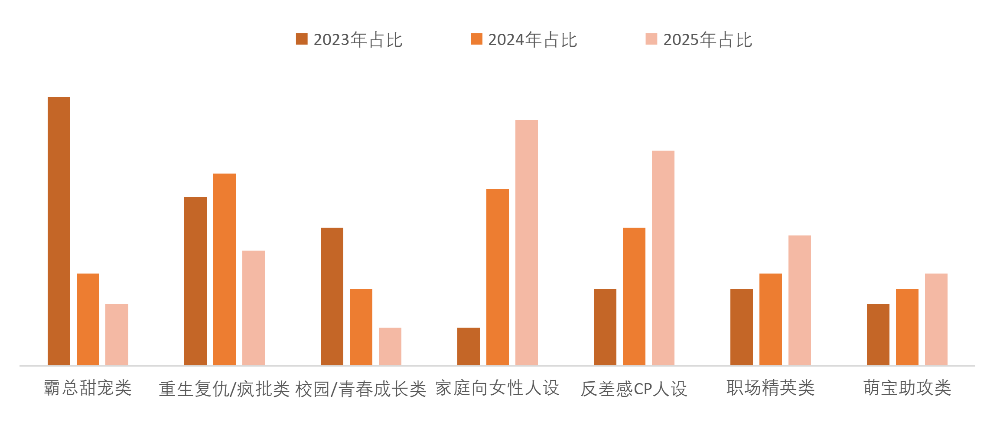
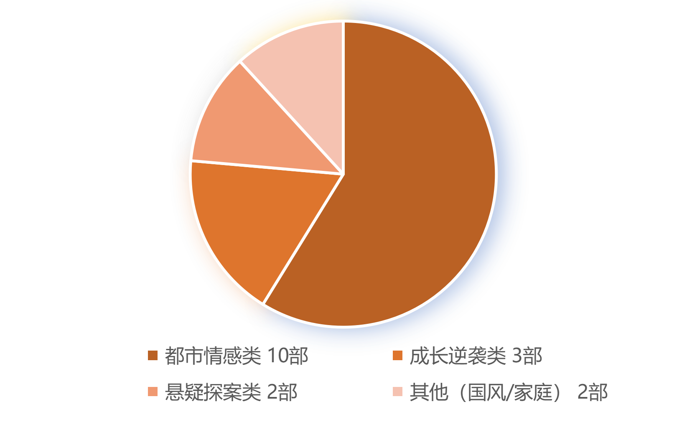
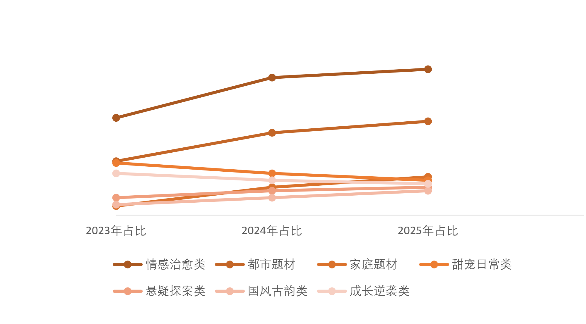
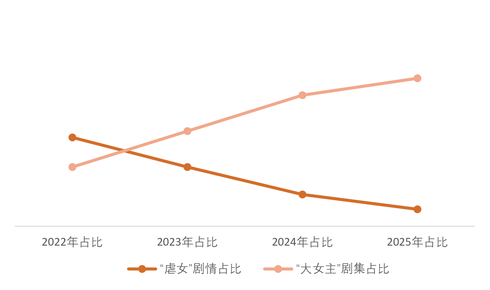
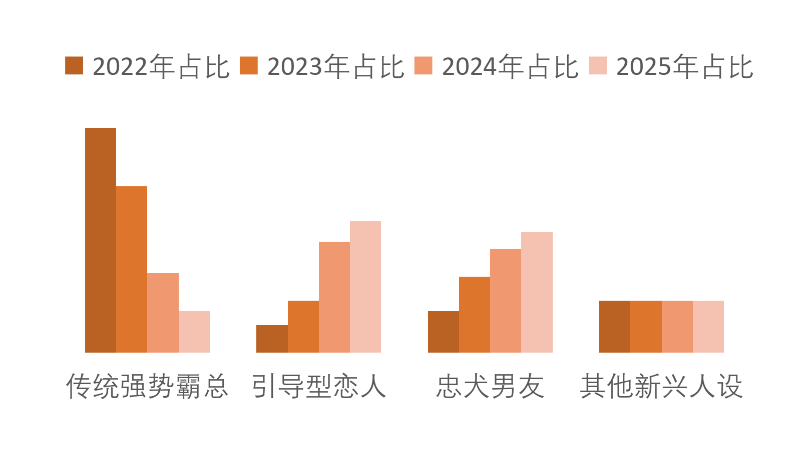
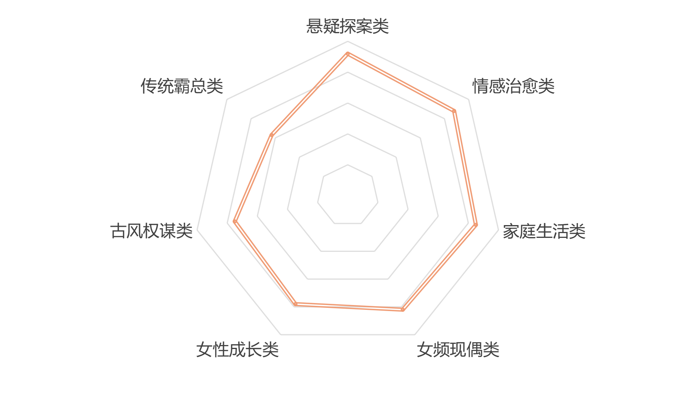
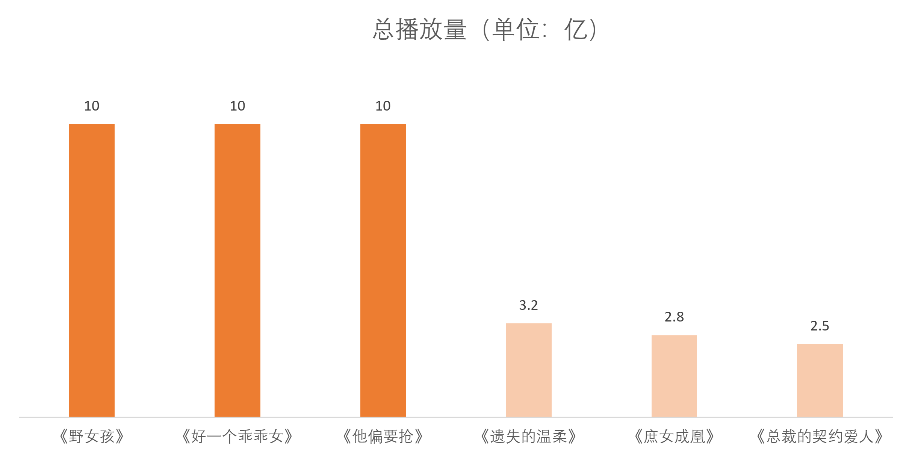

| 女频短剧题材热度变化 |
为什么要关注这个话题？ |
|
| 女频短剧的题材偏好直接对应女性群体的情绪诉求与生活关注比如“现实向职场题材”崛起，既体现女性对职业成长的共鸣，也折射出当代女性对“非恋爱向”内容的需求提升；而题材迭代速度加快，也反映出女性受众的审美疲劳周期缩短，内容偏好更趋多元。现代女性的社会身份从“单一家庭角色”转向“多元身份叠加”，女频短剧题材的变化正是这种转型的映射。 | ||
Female-oriented short drama popularity |
||
【题材风向突变：情感治愈、家庭类题材成为“流量新宠”】
大众对贴近生活、具备情绪价值内容的需求
激增，也让情感治愈、家庭类题材成为内容
市场的 “新蓝海”
（2023 - 2025年女频题材短剧占比）
【人设风向大洗牌：“霸总”遇冷，现实向人设成新宠】
受众偏好从强悬浮设定转向更具生活共鸣、更具反差感内容。
更具反差感的内容。这一转变，标志着内容市场的 “人设审美”
正式进入 “去悬浮、重真实” 的新阶段。

【2025 短剧“10亿播放俱乐部”：
女性受众主导市场话语权】
女性用户占比的持续攀升————女性已成为
短剧市场的核心受众，不仅深度主导了情感类
题材的热度，更直接影响着短剧品类的迭代方
向与商业价值闭环。数据同时显示，成长逆袭、
悬疑探案等题材也占据一定席位，但都市情感
类的绝对优势，印证了“女性向情感内容”仍然
当前短剧市场的流量密码。

（数据来源于：WETRUE联合新腕儿发布的2025年1月-11月个月度短剧榜、CSM媒介研究的《微短剧行业发展报告2025》、骨朵网络影视对红果10亿短剧俱乐部的分析报告）

【女频短剧叙事逻辑“大翻身”：
“大女主掌控叙事主动权】
女性受众对 “弱化女性、制造苦难”
戏码的审美疲劳，以及对 “自主选择、掌控命运”
女性形象的强烈偏好，女频短剧正从 “虐心工具”
转向 “女性力量的表达载体”叙事逻辑的迭代也
标志着女性向内容进入“尊重女性主体性” 的新阶段。
“尊重女性主体性” 的新阶段。

(数据来源：骨朵网络影视行业回溯数据、“2023年《短剧产业白皮书》”、“艺恩《2025短剧用户内容消费洞察》”、“红果短剧‘10亿短剧俱乐部’战报”、“骨朵网络影视同步检测”）
【女频短剧人设 “换赛道”】
女性受众对 “强控制型男性人设” 的审美疲劳，
也印证了女频内容从 “悬浮霸总叙事” 向 “更
贴近情感平等、生活共鸣” 方向的转型 —— 人
设的迭代，正是女频短剧 “去霸总化、重情感
真实” 的直观注脚。

（数据来源于：钛媒体2022相关核心数据统计、AppGrowing2024年初1000部热门投放短剧关键词、骨朵网络影视2024-2025人设数据统计、澎湃新闻“助力2024-2025年总裁人设退潮及家庭关键词增长数据论证”）
【女频短剧完播率“分层”：强悬念、高共鸣题材领跑】
当受众对套路化、悬浮化内容的耐心持续流失，
强悬念、能引发生活共鸣的题材，正凭借 “反
套路”“有情绪价值” 的特质，成为女频短剧留
住用户的关键，也进一步倒逼内容创作向 “去
同质化、重用户情绪” 方向转型。

(数据来源：红果短视频平台）
【女频短剧关键词“换血”：从“霸总”到“夫人”】
从 “霸总甜宠” 的悬浮设定，转向 “家庭向女性人设”
“大女主掌控叙事” 的现实向表达，既印证了 “去悬浮、
重生活共鸣” 的内容迭代逻辑，也体现了女性受众对更
具主体性、更贴近自身身份的角色与剧情的偏好升级。

（2022年核心关键词数据） （2025年核心关键词数据）
【女频短剧爆款密码：绑定社会热点】
社会热点为题材注入了话题性与情感共鸣点，
既契合了女性受众对现实议题的关注，也让
内容跳出同质化窠臼，印证了 “绑定社会情
绪” 是女频短剧实现播放量断层领先的关键策略。

（数据来源于：红果平台数据机构监测、DataEye机构统计的免费端短剧整体播放水平、红果短剧平台内容同质化现状行业分析报道）